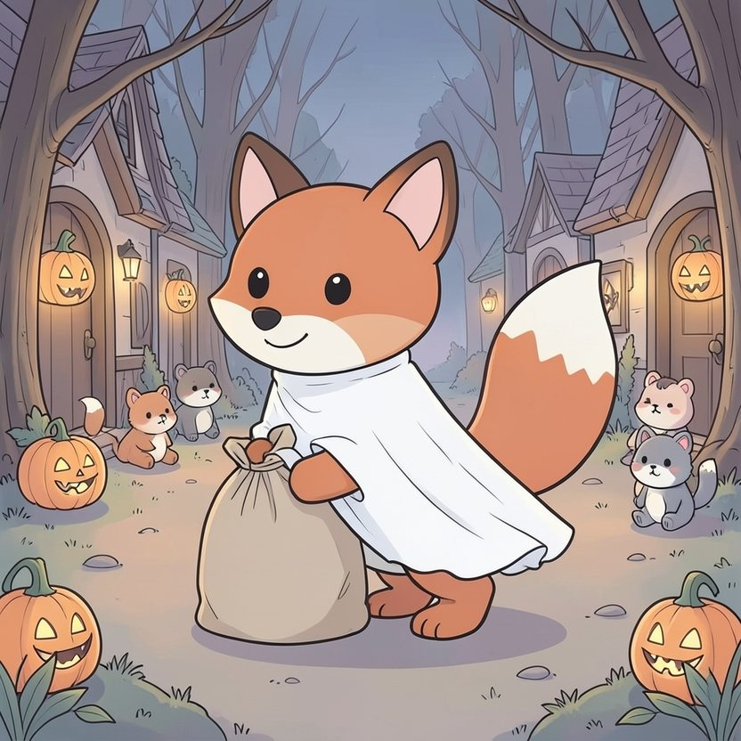

Titistoire › Les Étoiles (3-6 ans)
Filou aux trois déguisements
Une histoire de Filou le renard pour parler de : la gourmandise et le partage.

▶ Écouter et regarder l'histoire
Gratuit, sans inscription : la voix lit, le texte suit mot à mot, les images tournent comme dans un album.
Le texte de l'histoire
C'est le soir d'Halloween. Dans la forêt des Quatre-Chênes, une citrouille allumée grimace devant chaque porte. Et derrière chaque porte, il y a des bonbons. Filou s'en lèche déjà les babines.
La règle est simple : on frappe, on crie « Des bonbons ou un sort ! », et l'on reçoit une poignée de friandises. Une seule poignée par maison.
« Une seule ? glousse Filou, caché derrière un buisson. C'est bien maigre, pour un renard de mon talent. » Il a un plan. Et trois déguisements au fond de son sac.
Chez la vieille Mathurine, il frappe en fantôme. « Hou-hou ! Des bonbons ou un sort ! » Une poignée. Il détale derrière un buisson, change de costume en un clin d'œil, et revient en sorcière.
« Hi-hi-hi ! Des bonbons ou un sort ! » « Tiens, encore une petite sorcière », s'attendrit la tortue, qui n'y voit plus très clair. Deuxième poignée. Et le revoilà en pirate.
Trois déguisements, trois poignées, à chaque maison. « Facile ! » Son sac enfle, enfle, enfle. Il pèse bientôt si lourd que Filou doit le traîner à deux pattes dans les feuilles, en soufflant.
« Oh ! Tu en as une montagne ! » s'exclame Rosie, son petit sac à la patte. « Tu nous en donnes ? » demande Nestor. Filou serre son trésor contre lui. « Ah non. Je les ai gagnés. Tous. »
Il s'installe sur une souche, bien à l'écart, loin des citrouilles, et il se met à l'ouvrage. Un caramel. Une sucette. Deux guimauves. Encore un caramel.
Les dix premiers sont délicieux. Les dix suivants sont bons. Les dix d'après… il les mâchonne quand même.
C'est alors que passe un petit fantôme, avec de grandes pattes grises qui dépassent du drap. C'est Loupiot, le louveteau. Son sac pend au bout de sa patte, tout plat.
« Tu n'as rien eu ? » « J'arrive toujours après quelqu'un, soupire Loupiot en retournant son sac. On me répond : désolé, un fantôme, une sorcière et un pirate ont tout raflé. Ils devaient avoir très faim. »
Filou avale son caramel de travers. Le fantôme, la sorcière et le pirate… il les connaît même très bien, tous les trois.
Et juste à ce moment-là, son ventre gargouille. Grrrloub. Puis encore. Grrrloub-loub. Filou verdit. Un vrai vert de sorcière, sans le moindre maquillage.
« Ouille… » gémit-il, plié en deux. Tous ces bonbons s'entrechoquent là-dedans comme des cailloux dans un seau. Il en reste encore un sac entier, et il ne peut plus en voir un seul.
Il regarde le sac tout plat de Loupiot. Il regarde son gros sac rebondi. Même avec le mal de ventre, le calcul n'est pas bien difficile.
« Loupiot… le fantôme, la sorcière et le pirate, c'était moi, avoue Filou. J'ai pris ta part. Et celle des autres. » Loupiot écarquille les yeux sous son drap. « Les trois ? Tu cours drôlement vite. »
Filou verse des bonbons dans le sac du louveteau. Une poignée. Deux. Dix. Jusqu'à ce qu'il soit dodu comme une citrouille. Son ventre le tiraille toujours, mais quelque chose d'autre va mieux.
« Viens, lance-t-il, le sac sur l'épaule. D'autres n'ont pas eu leur compte. »
Ils font le tour de la clairière. Une poignée pour Rosie, une pour Nestor, une pour Plume. Et une pour chacun des petits lapins, qui n'avaient récolté que des noisettes.
Quant à la vieille Mathurine, qui avait tout donné, Filou dépose sur son paillasson, à pas feutrés, ses trois plus beaux caramels. Avec un petit mot : « De la part d'un fantôme, d'une sorcière et d'un pirate. Pardon. »
Quand il a fini, son sac est presque vide. Tout au fond, il reste une dernière sucette. Il la regarde. Non, vraiment, il n'en a même pas envie.
Ils s'assoient en rond autour de la plus grosse citrouille. Les bonbons voyagent de patte en patte. « Goûte celui-là ! » « Je te l'échange contre un rouge ! » C'est bien plus gai que tout seul sur la souche.
Filou, lui, sirote une tisane que Plume lui a préparée. Beurk. Mais Loupiot s'est pelotonné tout contre lui, et il lui décrit chaque bonbon, pour qu'il en profite quand même.
L'année suivante, Filou n'emporte qu'un seul déguisement. Un fantôme à deux têtes : une tête de renard, une tête de loup. Chacun reçoit sa poignée. Et c'est exactement assez.